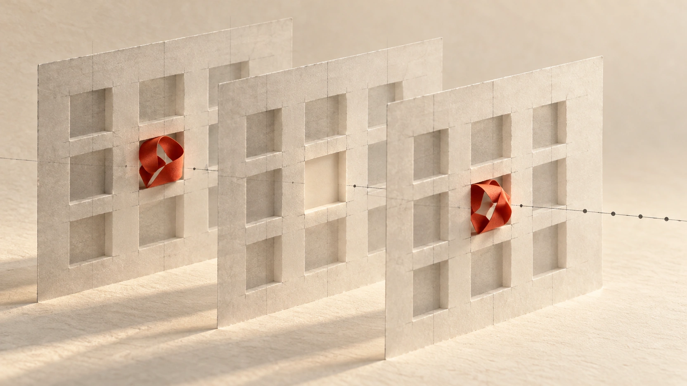
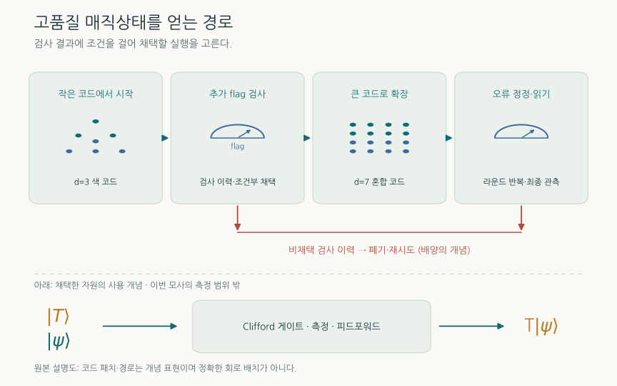
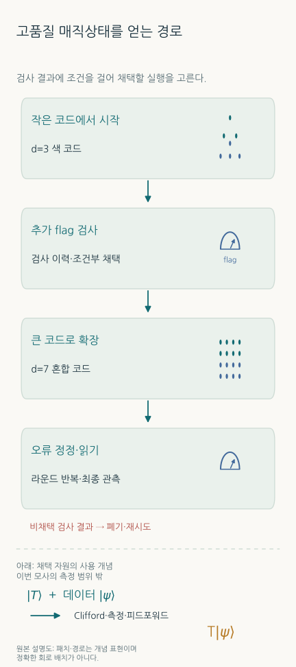
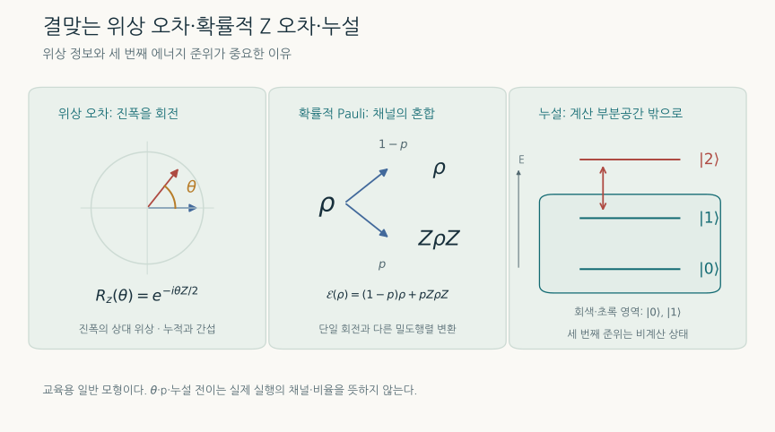
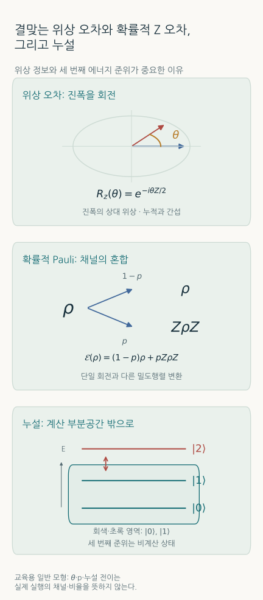
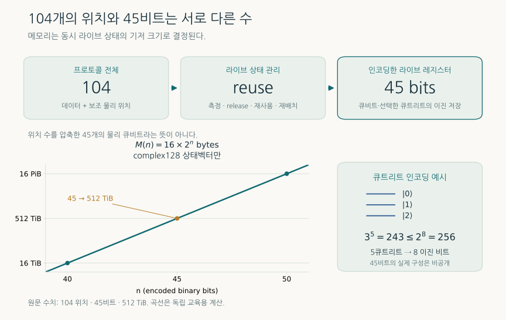
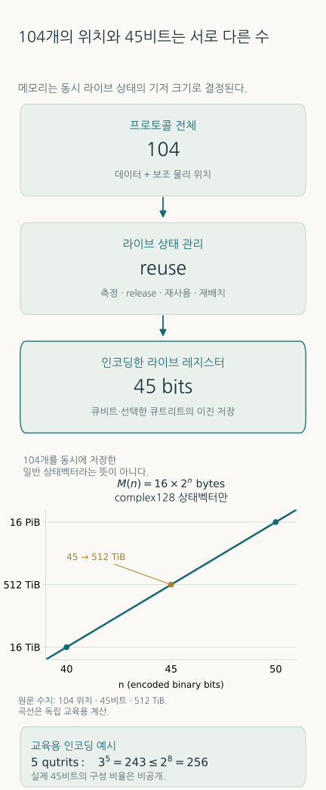

104큐비트 프로토콜의 고전 모사: JUPITER로 시험한 매직상태 배양
좋은 양자계산을 만들기 위해 거대한 고전계산이 필요한 이유 - 매직상태, 결맞는 오차와 누설, 45비트 상태 레지스터의 의미
TECH REVIEW · 2026년 10월 20일 · 양자 오류정정과 고성능 컴퓨팅

내용 살펴보기
1. 양자컴퓨터를 설계하는 고전 슈퍼컴퓨터
양자 오류정정의 목표는 오류가 생기는 물리 큐비트로 신뢰할 수 있는 논리 큐비트를 만드는 것이다. 그러나 정보를 오래 보존하는 것만으로 유용한 계산이 완성되지는 않는다. 논리 게이트를 수행하고, 측정 결과에 따라 다음 동작을 바꾸며, 실패한 준비 과정을 다시 시도해야 한다. 이 과정 전체가 잡음 속에서 어떻게 작동하는지 시험하는 일도 설계의 일부다.
2026년 10월 19일 NVIDIA는 율리히 슈퍼컴퓨팅 센터의 JUPITER에서 104개의 물리 큐비트 위치를 사용하는 매직상태 배양 프로토콜을 모사했다고 발표했다. 사용한 계산 자원은 GH200 GPU 8,192개다. 이것은 실제 양자 프로세서에서 실행한 104큐비트 실험이 아니라, 양자 프로토콜을 고전 GPU로 계산한 결과다. [1,2]
성과를 이해하는 핵심은 두 가지다. 첫째, 왜 매직상태라는 자원이 오류 허용 계산의 병목이 되는가. 둘째, 104개의 위치가 등장하는 회로를 어떻게 최대 45비트의 부호화된 상태 레지스터로 계산했는가. 두 번째 질문의 답에는 측정 이후의 저장공간 재사용과 3준위 상태의 묶음 부호화가 들어간다. 임의의 104큐비트 상태를 작은 상태로 압축했다는 뜻은 아니다.
2. 논리 메모리에서 계산으로: 매직상태의 역할
Clifford 게이트는 Pauli 연산자를 다른 Pauli 연산자로 바꾸는 게이트다. 오류정정의 많은 연산을 이 틀에서 다룰 수 있다. 안정자 상태 입력, Clifford 게이트와 Pauli 측정으로 제한하고 적합한 Pauli 잡음을 사용하면, 거대한 상태벡터를 저장하지 않는 효율적인 안정자 모사가 가능하다. [3]
범용 양자계산에는 이 틀을 넘어서는 자원이 필요하다. 대표적인 예가 T 게이트다. 여기서는 다음 표준 관례를 쓴다.
이런 비안정자 자원을 적절히 준비하면 Clifford 연산·측정·피드포워드와 결합하여 논리 T 연산을 구현할 수 있다. 매직상태는 이 과정에서 소비되는 자원이다. 모든 비Clifford 회로가 반드시 어려운 것은 아니지만, 단순한 안정자 모사만으로 일반적인 계산을 처리할 수는 없어진다. [3]
많은 부정확한 상태를 함께 처리하는 전통적인 증류와 달리, 매직상태 배양(cultivation)은 작은 부호에서 상태를 준비하고 반복 검사하며 더 큰 부호로 옮기는 접근이다. 검사에서 문제가 드러나면 그 시도를 버리고 다시 시작한다. Gidney·Shutty·Jones의 원 연구는 지정한 회로 수준 잡음 모형에서 이러한 절차의 비용 절감을 분석했다. [4]
따라서 성공한 상태의 충실도만으로 공장의 성능을 평가할 수 없다. 독립적이고 동일한 시도의 수락 확률이 , 한 시도의 고정 비용이 이라면 단순한 평균 비용은 다음과 같다.
이는 설명용 관계다. 실제 장치에서는 조기 중단, 병렬 준비, 재설정과 버퍼 대기 때문에 비용 모형이 달라진다. 핵심은 낮은 출력 오류율과 높은 수락률을 함께 확보해야 한다는 점이다.
3. 이번에 계산한 프로토콜
기술 자료가 설명하는 흐름은 거리 3 색 부호의 준비, 추가 flag 측정, 거리 7의 색 부호·표면 부호 혼합 구조로의 성장, 추가 오류정정과 판독이다. Flag는 어떤 오류 전파 경로가 발생했는지 알려 주는 보조 측정이다. 104는 프로토콜 순서 전체에 사용되는 데이터·보조 물리 위치를 포함한다. [1]


여기서 부호 거리는 검출하거나 교정할 수 있는 오류의 구조를 설명하는 중요한 지표다. 하지만 회로 도중의 오류 전파, 비Clifford 연산과 측정까지 포함한 실제 오류 억제 차수가 정적 부호 거리와 자동으로 같아지는 것은 아니다. 추가 flag 연구가 필요한 이유가 여기에 있다. [5]
4. 결맞는 위상 오차와 누설을 구별해야 하는 이유
실제 하드웨어의 잡음을 항상 독립적인 Pauli 오류로 바꿔 생각할 수는 없다. 예를 들어 작은 위상 회전이 같은 방향으로 반복되면 진폭의 위상이 누적된다. 반면 확률적 Z 오류에서는 짝수 번과 홀수 번의 오류가 만드는 통계가 중요하다.
이를 보기 위해 상태에 를 번 적용하고 X 기저에서 측정하는 단일 큐비트 교육용 예를 생각하자. 중간 오류정정은 없다. 한 번의 X 측정 오류 확률이 같도록 확률적 Z 오류의 확률을 로 맞추면,
라디안, 이면 각각 약 0.997%와 0.0500%다. 같은 한 단계 오류 확률에서 출발해도 반복 결과가 달라진다. 이 수치는 위 식을 직접 계산한 예이며 JUPITER 프로토콜의 오류율 예측이 아니다.
누설은 또 다른 문제다. 물리 소자가 두 계산 준위 밖의 세 번째 준위에 들어가면 추가 성분이 필요하다. 순수 상태의 예로 다음처럼 쓸 수 있다.
계산 부분공간에 남아 있을 확률은 다. 계산 공간 안에서 작용하는 Z 오류와 달리, 누설은 게이트와 측정의 해석 자체를 바꿀 수 있다. 이번 기술 설명은 선택한 물리 위치에 결맞는 위상 오차와 세 번째 준위 누설을 포함한다고 밝힌다. 구체적인 잡음 강도는 공개하지 않는다. [1]


5. 104개의 위치가 45비트 저장 레지스터가 되는 과정
임의의 순수 n큐비트 상태를 직접 저장하려면 개의 복소 진폭이 필요하다. 따라서 104개 큐비트가 모두 살아 있는 임의의 얽힌 상태를 그대로 유지한다면, 45비트 상태벡터로 담을 수 없다.
이번 계산은 프로토콜의 시간 구조를 이용한다. 어떤 보조 상태를 측정하고 더 이상 양자 상태로 유지할 필요가 없어지면 저장공간을 해제하고 이후 단계에서 재사용한다. 측정 결과가 제어하는 고전적 의존성과 확률 통계는 보존해야 한다. 여전히 필요한 얽힘을 임의로 버리는 작업과 다르다. 연산 순서를 바꾸어 동시에 살아 있어야 하는 상태의 수를 줄이는 것이다. [1]
여기에 qutrit packing이 더해진다. 두 준위 대신 세 준위를 표현하는 qutrit 다섯 개의 기저 상태 수는 이다. 각 qutrit를 2비트씩 따로 배정하면 10비트가 필요하지만, 다섯 개를 묶으면 8비트의 256칸에 정확히 대응시킬 수 있다.
남는 13칸은 부호화의 패딩이다. 물리적인 새 준위가 아니며, 이 매핑 자체가 유효한 진폭을 잘라내는 것도 아니다. 다만 전체 프로토콜의 104→45 감소를 이 예 하나로 설명할 수는 없다. 공개 자료는 최대 부호화 레지스터가 45비트라고 제시하지만, 그 순간의 이준위·삼준위 자유도별 상세 구성은 밝히지 않는다. [1]


6. 512 TiB가 말해 주는 것
복소수 하나를 16바이트로 저장하는 complex128 관례에서 상태벡터의 메모리는 바이트다. 아래 수치는 이 식을 직접 계산한 것이다. TiB와 PiB는 각각 , 바이트다.
| 부호화 레지스터 | 상태벡터만의 메모리 | 해석 |
|---|---|---|
| 40비트 | 16 TiB | 45비트의 1/32 |
| 45비트 | 512 TiB | 공개된 최대 레지스터 |
| 46비트 | 1 PiB | 한 비트 추가로 두 배 |
| 50비트 | 16 PiB | 45비트의 32배 |
45비트에서는 , 약 35.2조 개 진폭을 저장한다. 512 TiB를 GPU 8,192개에 균등하게 나누면 GPU당 64 GiB다. 이것은 상태벡터만의 산술값이며 통신 버퍼·작업공간·분해 분석용 메모리를 포함하지 않는다. 큰 분산 계산의 성능에는 메모리 외에도 GPU 사이의 진폭 교환, 연산 배치와 네트워크가 영향을 준다. 메모리 크기만으로 실행시간이나 에너지 비용을 계산할 수는 없다.
기술 자료는 선택한 상태 분할에 cuBLASMp·cuSOLVERMp 기반 분해 분석을 적용해 더 간결한 근사 표현의 가능성을 살폈다고 설명한다. 기준 모사는 원래 상태에서 계속 진행했다. 분해 분석을 했다는 사실을 전체 기준 계산이 잘린 텐서 표현으로 실행됐다는 뜻으로 바꾸어서는 안 된다. [1,6]
7. 개선 수치는 같은 조건에서 읽어야 한다
관련 자료에는 성격이 다른 숫자들이 함께 등장한다. 원 배양 연구의 비용 개선은 지정한 잡음과 목표 충실도 아래의 qubit-rounds, 즉 공간과 시간을 함께 세는 자원량 비교다. NVIDIA 발표의 “90% 적은 큐비트”는 회사가 제시한 요약 주장이다. 동일한 목표 오류율·처리량·재시도 비용을 맞춘 비교표가 이번 발표에 제시되지는 않았으므로, 모든 오류 허용 계산에 적용되는 물리 큐비트 90% 감소로 일반화할 수 없다. [2,4]
Chan 등은 별도의 사전공개 연구에서 비Clifford 배양 회로의 오류 전파를 분석하고 추가 flag 검사를 제안했다. 그 연구의 회로 수준 depolarizing 모형에서, 거리 5의 escape 이전 단계와 잡음 확률 에서 보고한 예는 논리 오류 4.9배 감소와 수락 상태당 시도 횟수 1.36배 증가다. 더 강한 검사가 출력 품질과 수락 비용을 함께 바꾼다는 사례다. 이 수치는 JUPITER의 결맞는 오차·누설 모사에서 얻은 측정값이 아니다. [5]
실제 장치 실험도 별도로 존재한다. Google의 Willow 배양 실험은 배양하지 않은 상태 대비 40배 오류 감소, 충실도 0.9999(1)를 보고했으며 전체 시도 중 8%가 유지되는 후선택 조건을 함께 제시했다. 이는 물리 프로세서의 실험 근거이고, JUPITER 고전 모사의 성능 지표와 직접 순위를 매길 수 없다. [7]
8. 무엇을 확인했고, 무엇이 더 필요한가
공개 기술 글의 약 확률 일치는 NVAQC에서 수행한 작은 packed 회로의 상태벡터·텐서 네트워크 교차검증에 해당한다. 전체 104 위치 프로토콜의 논리 오류율이나 모든 출력의 정확도 보증이 아니다. 전체 실행의 시간·GPU 시간·샷 또는 trajectory 수·수락률·출력 논리 오류율·오차막대는 확인한 공개 자료에 제시되지 않았다. [1]
GPU 수는 발표의 도입부와 공식 보도자료가 일치하는 8,192개를 사용했다. 기술 글 한 문단에는 8,912라는 상충 표기가 있다. 이 리뷰는 공개 설명과 수식·메모리를 대조했으며 JUPITER 실행을 재현하지 않았다. 공개된 기존 배양 연구 코드와 이번 전체 캠페인의 재현 가능한 실행 패키지도 구별한다.
다음 단계에서 특히 유용한 자료는 잡음 세기별 출력 오류율과 수락률, 시도당·성공당 비용, 사용한 회로·디코더·샘플링 방법과 통계 구간이다. 그래야 작은 참조 계산으로 검증한 구현이 큰 프로토콜에서 어떤 설계 결정을 바꾸었는지 평가할 수 있다.
9. 재료·화학 계산으로 이어지는 경로
오류 허용 양자 화학이나 재료 시뮬레이션의 자원 추정에는 논리 큐비트 수뿐 아니라 비Clifford 연산의 수와 공급 속도가 들어간다. 매직상태 공장의 비용이 줄고 공급을 신뢰할 수 있게 되면 전체 알고리즘의 시간·공간 예산도 달라질 수 있다. 그러나 이를 연결하려면 해당 알고리즘의 T 자원 요구량, 허용 실패 확률, 공장의 수락률과 오류율, 처리량을 함께 맞춰야 한다.
이번 결과는 특정 분자의 에너지를 더 정확히 계산했거나 양자 우위를 실증한 사례가 아니다. 의미 있는 연결 고리는 설계 전에 더 현실적인 잡음으로 자원 준비 절차를 시험하는 능력이다. 결맞는 오차와 누설이 어떤 검사에서 드러나는지, 어느 단계에 보조 측정을 추가하는 것이 유리한지, 충실도 개선이 재시도 비용을 얼마나 늘리는지 탐색할 수 있다. 거대한 고전 계산은 이런 선택의 참조점이 된다. 그 참조점을 실제 장치의 교정·측정·누설 제거와 대조할 때 오류 허용 계산의 공학으로 이어진다.
최근 DQB 원문은 2026년 10월 20일 아카이브 PDF에서, 다른 호는 문서 아카이브에서 볼 수 있다.
참고문헌
- Holmes, Kloss, Pancotti, Svore. Advancing Fault-Tolerant Quantum Computing with GPU-Accelerated Simulation. NVIDIA Quantum, 2026-10-19. 프로토콜·잡음·저장 방식·소형 교차검증에 관한 핵심 기술 설명.
- NVIDIA. NVIDIA Runs Record Simulation of Fault-Tolerant Quantum Computing at Jülich Supercomputing Centre, 2026-10-19. 장비 맥락: JSC, JUPITER.
- Bravyi, Kitaev. Universal Quantum Computation with ideal Clifford gates and noisy ancillas. Physical Review A 71, 022316 (2005).
- Gidney, Shutty, Jones. Magic state cultivation: growing T states as cheap as CNOT gates, 2024년 최초 공개. 원 연구의 회로·통계·코드.
- Chan, Strikis, Sun, Cai. Diagnosing and Restoring the Degraded Fault Distance of Magic State Cultivation, v3, 2026-09-30. 사전공개 논문; JUPITER 캠페인과 별도 연구.
- NVIDIA. cuStateVec, cuBLASMp, cuSOLVERMp. 상태벡터·분산 선형대수 소프트웨어 문서.
- Rosenfeld 등. Magic state cultivation on a superconducting quantum processor. 실제 장치 실험. Google Quantum AI의 2026-10-15 공식 설명과 대조.